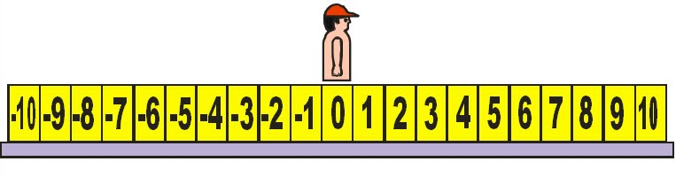

Bilangan Bulat
Bilangan Positif Dan Bilangan Negatif
Garis bilangan himpunan bilangan bulat digambarkan seperti berikut.
Membandingkan dan Mengurutkan Bilangan Bulat
Perhatikan 3 dan -3 pada garis bilangan berikut.

Berapa satuankah jarak dari 0 ke 3? Berapa satuankah jarak dari 0 ke -3? Dua bilangan disebut berlawananapabila berjarak sama dari 0 pada garis bilangan, tetapi arahnya berlawanan. Bilangan apalagi yang saling berlawanan?
Perhatikan 3 dan 5. Bilangan mana yang berjarak lebih panjang dari titik 0? Bilangan mana yang berjarak lebih pendek? Bilangan apalagi yang berjarak lebih pendek dari jarak 5? Bilangan apa yang berjarak lebih panjang dari jarak 3? Pada suatu garis bilangan, bilangan yang terletak di sebelah kiri selalu kurangdari bilangan yang terletak di sebelah kanannya. Karena 3 di sebelah kiri 5, 3 kurang dari 5, dilambangkan dengan 3 < 5. Atau, karena 5 di sebelah kanan 3, 5 lebih dari 3, dilambangkan 5 > 3.
Pada garis Bilangan
- Semakin ke kanan, nilai bilangan semakin besar.
- Semakin ke kiri, nilai bilangan semakin kecil nilai.
Operasi pada Bilangan Bulat
Penjumlahan
Misalkan, tim sepak bola kelasmu bulan lalu kemasukan 5 gol. Bulan ini karena kurang kerjasama, tim kelasmu juga kemasukan 3 gol. Suatu model yang disebut keping aljabar dapat digunakan untuk memperagakan situasi di atas.
Misalkan satu keping yang berwarna biru mewa ki li - 1. Situasi diats dapat diperagakan sebagai berikut.

-5 + -3 = 8
Pengurangan
Di sebuah rumah makan terdapat dua buah lemari es. Lemari es pertama suhunya adalah 50 C, sedangkan lemari es kedua suhunya 20 C. Berapa derajatkah selisih suhu kedua lemari es?
Model atau keping aljabar yang telah digunakan untuk penjumlahan digunakan juga untuk pengurangan.

Jadi, 5 – 2 = 3. Artinya beda suhu kedua lemari es adalah 30 C. Periksa 5 + (-2) menggunakan garis bilangan dan keping aljabar . Banding hasilnya dengan hasil dari 5 - 2.
Perkalian dan Pembagian
Misa l seor ang penyelam mutiara menyelam dengan kecepatan 2 m per detik menuju dasar laut selama 3 detik. Posisi penyelam tersebut dapat ditunjukkan dengan garis bilangan vertikal.
a. Dimanakah posisi penyelam setelah 3 detik?
b. Bilangan bulat manakah yang melambangkan posisi si penyelam?
| Perkalian bilangan bulat | Hasil perkalian dua bilangan bulat bertanda sama adalah bilangan bulat positif. Hasil perkalian bilangan bulat berbeda tanda adalah bilangan bulat negatif. Hasil kali sembarang bilangan bulat dengan nol adalah nol. |
| Pembagian Bilangan Bulat | Hasil perkalian dua bilangan bulat bertanda sama Hasil pembagian dua bilangan bulat bertanda sama adalah bertanda positif Hasil pembagian dua bilangan bulat berbeda tanda adalah bertanda negatif.td> |
Sifat Operasi Hitung Bilangan Bulat
Sifat komutatifSifat komutatif (pertukaran) pada penjumlahan dan perkalian.
a + b = b + a
a x b = b x a, berlaku untuk semua bilangan bulat
Contoh:
1) 2 + 4 = 4 + 2 = 6
2) 3 + 5 = 5 + 3 = 8
3) 4 x 2 = 2 x 4 = 8
4) 3 x 2 = 2 x 3 = 6
Sifat asosiatif
Sifat asosiatif (pengelompokan) pada penjumlahan dan perkalian.
(a + b) + c = a + (b+c)
(a x b) x c = a x (bxc), berlaku untuk semua bilangan bulat
Contoh:
1) (2+4) + 6 = 2 + (4+6) = 12
2) (3+6) + 7 = 3 + (6+7) = 16
3) (3x2) x 4 = 3 x (2x4) = 24
4) (3x5) x 2 = 3 x (5x2) = 30
Sifat distributif (penyebaran)
a x (b + c) = (a x b) + (a x c), yang berlaku untuk semua bilangan bulat.
Contoh
1) 4 x (5 + 2) = (4 x 5) + (4 x 2) = 28
2) 5 x (7 + 3) = (5 x 7) + (5 x 3) = 50
Operasi Campuran
Aturan dalam mengerjakan operasi campuran adalah sebagai berikut.
1 .Operasi dalam tanda kurung dikerjakan terlebih dahulu.
2. Perkalian dan pembagian adalah setara, yang ditemui terlebih dahulu dikerjakan terlebih dahulu.
3. Penjumlahan dan pengurangan adalah setara, yang ditemui terlebih dahulu dikerjakan terlebih dahulu.
4. Perkalian atau pembagian dikerjakan lebih dahulu daripada penjumlahan atau
pengurangan.
Contoh
1. a. 20 + 30 – 12 = 50 – 12 = 38
b. 40 – 10 - 5 = 30 – 5 = 25
c. 40 - (10 - 5) = 40 – 5 = 35
2. a. 600 : 2O : 5 = 30 : 5 = 6
b. 600 : (20 : 5) = 600 : 4 = 150
c. 5 x 8 : 4 = 40 : 4 = 10
3. a. 5 x (8 + 4) = 5 x 12 = 60
b. 5 x 8 -4 = 40 – 4 = 36
c. 5 x (8 – 4) = 5 x 4 = 20
Lingkaran
Unsur-unsur Lingakaran
 |
Jika kamu berjalan searah putaran jarum jam dari titik A menelusuri lingkaran dan kembali ke titik A, maka panjang lintasan yang dilalui itu dinamakan keliling lingkaran (K). |
 |
Sudut pusat adalah sudut di dalam lingkaran yang titik sudutnya adalah titik pusat lingkaran. ∠APB adalah sudut pusat lingkaran. Gambar lah sudut pusat yang lain. Ada berapa sudut pusat yang dapat kamu gambar? ABadalah tali busur lingkaran. Gambarlah tali busur yang lain. Ada berapa tali busur yang dapat kamu buat? Sebutkan dengan kata-katamu sendiri pengertian tali busur! |
 |
Garis lengkung ADC disebut busur panjang atau busur besar dan ditulis ADC. Apakah ciri suatu busur panjang? Sedangkan garis lengkung ABC disebut busur pendek atau busur kecil dan ditulis ABC atau AC saja. Apakah ciri suatu busur pendek? Tulislah dua busur panjang dan dua busur pendek yang lain. Selanjutnya jika disebut busur AC maka yang dimaksud adalah busur pendek AC. |
 |
Jika ABdiameter lingkaran maka AB disebut busur setengah lingkaran. Ada berapa busur setengah lingkaran yang dapat kamu buat? Coba gambar busur setengah lingkaran yang lain. |
Keliling Lingkaran
Dengan kata-kata: Keliling sebuah lingkaran sama dengan π dikalikan dengan diamter lingkaran atau 2π dikalikan dengan jari-jari lingkaran.
Secara simbolik: Jika suatu lingkaran berjari-jari r, dan diamter lingkaran d, maka keliling lingkarn adalah: K = 2πr = πd
Luas Lingkaran
Dengan kata-kata: Luas sebuah daerah lingkaran
(yang seterusnya disebut luas lingkaran) sama dengan
πdikalikan dengan kuadrat dari panjang jari-jari
lingkaran itu.
Secara simbolik: Jika suatu lingkaran berjari-jari r,
maka luas lingkaran itu, L = πr2
Segitiga
Jenis-Jenis Segitiga
- Segitiga yang ketiga ukuran sisinya sama panjang disebut Segitiga samasisi.
- Segitiga yang dua ukuran sisinya sama panjang disebut segitiga samakaki
- Segitiga yang panjang sisi-sisinya tidak sama panjang disebut segitiga sebarang
Example!

Sudut Luar dan Sudut dalam Suatu Segitiga
Pengertian sudut luar segitigaadalah sudut yang dibentuk oleh sisi segitiga dan perpanjangan sisi lainnya dalam segitiga tersebut. Coba pikirkan apakah yang dimaksud dengan sudut dalam suatu segitiga?

Keliling dan Luas Daerah Segitiga
Untuk mencari keliling sebuah segitiga, kamu harus mengetahui terlebih dahulu panjang dari ketiga sisi segitiga tersebut karena keliling segitiga adalah jumlah panjang ketiga sisi yang membentuk segitiga.
Melukis Segitiga Siku-siku
Untuk melukis segitiga siku-siku, kamu harus ingat sifat-sifat segitiga siku-siku, yaitu salah satu sudutnya adalah 90° dan dua sudut yang lain lancip. Untuk melukis segitiga siku-siku, kamu dapat menggunakan penggaris dan busur derajat.
Cek Pemahaman
Coba gambarlah PQR siku-siku di Q dengan PQ= 6 cm dan QR= 8 cm!
Melukis Garis Sumbu, Garis Bagi, Garis Tinggi, dan Garis Berat
-
Garis tinggi pada suatu sisi dari suatu segitiga adalah garis yang ditarik dari sebuah titik sudut segitiga dan tegaklurus sisi di depannya.
-
Garis bagi suatu sudut dalamdari suatu segitiga adalah garis yang ditarik dari titik sudut segitiga dan membagi sudut tersebut menjadi dua sama besar.
-
Garis berat pada suatu sisi dari suatu segitiga adalah garis yang menghubungkan titik sudut dihadapan sisi itu dengan titik tengah sisi itu.
-
Garis sumbu pada suatu sisi dari suatu segitiga adalah garis yang tegak lurus dan melalui titik tengah sisi tersebut.
Contoh Penggambarannya!!

Langkah-langkah melukis (mengonstruksi) garis tinggi dari A (i), garis bagi dalam sudut B (ii), garis sumbu (iii), dan garis berat (iv) dalam gambar (i)–(iv) di di atas sebagai berikut:
- Melukis (mengonstruksi) garis tinggi dari A.
- Dengan titik A sebagi pusat dan jari-jari lebih besar jarak dari A ke , gambar suatu busur yang di dua titik D dan E.
- Dengan D sebagai pusat dan jari-jari lebih dari DE, gambar suatu busur di bagian atas . Gunakan jari-jari yang sama dan E sebagai pusat, gambar busur lain yang memotong pada F.
- Gambar tegak lurus terhadap
- Melukis (mengonstruksi) garis bagi dalam sudut B.
- Untuk membagi sudut ABC, buat suatu busur yang memotong sisi-sisi sudut. Sebut titik potong itu D dan E.
- Dengan ujung jangka pada D dan dengan membuka jangka lebih dari DE, buat suatu busur di bagian dalam sudut itu. Ulangi prosedur ini dan usahakan setting sama tetapi dengan ujung jangka pada E. Label perpotongan dari busur itu titik F.
- Gambar . Maka membagi sudut ABC . Dengan cara yang sama, anda dapat melukis (mengonstruksi) garis bagi lainnya dalam suatu segitiga ABC.
- Melukis (mengonstruksi) 000g aris sumbu pada .
- Tempatkan ujung jangka pada B dan buat busur di bagian atas dan di bagian bawah .
- Usahakan jari-jari sama, tempatkan ujung jangka pada A dan buat busur di bagian atas dan bagian bawah
- Label titik potong busur D dan E. Hubungkan titik D dan E di mana? AB yang merupakan garis sumbu pada . Dengan cara yang sama, anda dapat melukis (mengonstruksi) garis sumbu lainnya dari segitiga ABC.
- Melukis (mengonstruksi) garis berat pada .
- Buka jangka sedemikian sehingga terbuka lebih dari setengah panjang .
- Tempatkan ujung jangka pada B dan buat busur di bagian atas dan di bagian bawah .
- Usahakan jari-jari sama, tempatkan ujung jangka pada C dan buat busur di bagian atas dan di bagian bawah.
- Label titik potong busur D dan E. Titik Q pada yang merupakan titik tengah .
- Hubungkan titik A dengan titik Q, diperoleh yang merupakan garis berat dari titik A ke dalam segitiga ABC. Dengan cara yang sama, anda dapat melukis (mengonstruksi) garis berat lainnya dari segitiga ABC.
Peluang
Percobaan Statistika, Titik Sampel, Ruang Sampel, dan Kejadian
Apakah di sekolahmu pernah diadakan pertandingan olah raga? Seringkali sebelum pertandingan olah raga seperti: sepak bola, bola basket, dan bola voli, dilakukan undian untuk menentukan posisi awal tim tersebut berada . Undian dilakukan menggunakan mata uang logam, biasanya wasit memanggil kapten kedua ti m dan memint a kedua nya un tuk me mil ih angka atau gambar. Se la nj ut nya wa si t melambungkan mata uang tersebut dan setelah uang jatuh di tangan wasit dilihat, apa yang muncul. Bila yang muncul angka, maka salah s atu ti m di mint a me nentukan te mpat atau menendang duluan sesuai perjanjian awal yang disepakati.
Demikian juga sebaliknya apabila yang muncul gambar, akan dilakukan perjanjian sesuai yang disepakati sebelumnya Cara seperti di atas tersebut merupakan salah satu contoh percobaan statistika.
Dapatkah kalian menceritakan tentang contoh lain dari percobaan statistika? Pada percobaan pelemparan sebuah mata uang logam di atas, hasil yang dapat terjadi adalah muncul angka (A) atau gambar (G). Selanjutnya apabila semua hasil percobaan yang mungkin terjadi dihimpun dalam suatu himpunan;
yaitu S, maka himpunan tersebut dapat dituliskan S = { A, G}. Himpunan S ini biasa disebut dengan ruang sampel, sedangkan anggota-anggota himpunan yaitu A dan G biasa disebut sebagai titik-titik sampel. Peristiwa munculnya angka atau gambar pada percobaan pengetosan mata uang disebut dengan kejadian.
| Ruang Sampel & Titik Sampel | Ruang Sampel: Himpunan semua hasil percobaan yang mungkin terjadi
Titik Sampel: Anggota ruang sampel |
| Kejadian | Kejadian : Himpunan bagian dari ruang sampel |
Contoh Peluang


Terdapat 10 lintasan yang berbeda, atau hasil, untuk memilih kendaran pada contoh di atas. Daripada mencacah semua hasil yang mungkin, kita sebenarnya dapat menghitung jumlah hasil yang terjadi dengan melakukan pengamatan sederhana dari diagram pohon. Terdapat lima warna (lima cabang utama) dan dua tipe transmisi (dua cabang sekunder untuk masing-masing cabang utama) atau 10 = 5x2 kombinasi yang berbeda. Cara perhitungan ini menyarankan pada kita terhadap sifat berikut.
| Sifat Perhitungan Dasar | Jika suatu kejadian A dapat terjadi dalam pcara, dan untuk masing-masing p cara tersebut, kejadian B dapat terjadi dalam r cara, maka kejadian A dan B dapat terjadi, secara berkelanjutan dalam (pxr) cara. |
Peluang dengan Tiap Titik Sampel Berkesempatan Sama untuk Terjadi
Pada percobaan pengambilan satu kartu remi dari setumpuk kartu, terdapat 4 jenis kartu, wajik, hati, sekop, dan kalver dan 13 kartu (2 ,3, 4, 5, 6, 7, 8, 9, 10, jack, queen, king, dan as). Dalam percobaan pengambilan satu kartu akan diperoleh total 52 hasil yang dapat terjadi sebagai berikut.

Baik percobaan maupun kejadian di atas, akan memberikan ruang sampel dan ruangn kejadian yang sama. Oleh karena itum kita dapat dihitung.
- P(Kartu wajik) = 13/52
- P(Kartu bergambar orang) = 12/52
- P(Kartu wajik bergambar orang) = 3/52
Secara Umum
Misalkan suatu percobaan dengan setiap hasil memiliki kesempatan sama untuk terjadi,dengan ruang sampel S dan A adalah suatu kejadian pada percobaan tersebut, maka peluang A terjadi dapat dinyatakan oleh pernyataan berikut
| Peluang suatu Kejadian | Istilah : Rasio antara cacah anggota kejadian dengan cacah anggota sampel
Simbol : Misal cacah anggota kejadian A adalah n(A) dan cacah anggota ruang sampel S adalah n(S). Peluang kejadian A, P(A) adalah P(A) = n(A)/n(S) |
Perbandingan
Arti Perbandingan
Perbandingan merupakan suatu hal yang sangat penting dalam matematika, demikian juga dalam kehidupan sehari-hari kita pun tidak lepas dari perbandingan.
Sebagai ilustrasi perhatikan contoh berikut :
a. Usia Ayah 45 tahun dan usia ibu 40 tahun, sedangkan usia Ali 15 tahun serta usia Ani 10 tahun.

Perbandingan usia ayah dan ibu = 45 tahun : 40 tahun = 45 : 40 = 9 : 8
Perbandingan Usia Ali dan Ani = 15 tahun : 10 tahun = 15 : 10 = 3 : 2
Perbandingan usia Ayah dan Ali = 45 tahun : 15 tahun = 45 : 15 = 3 : 1
b. Tinggi badan Dewa 160 cm, tinggi badan Dewi, 120 cm dan tinggi badan Gita 60 cm

Perbandingan tinggi badan Dewa dan Dewi = 160 cm:120 cm = 160:120 = 4:3
Perbandingan tinggi badan Dewi dan Gita = 120 cm:60 cm = 120:60 = 2:1
Perbandingan tinggi badan Dewa dan Gita = 160 cm:60 cm = 160:60 = 8:3
Dari contoh tersebut dapat diketahui bahwa untuk membandingkan dua buah besaran perlu diperhatikan :
a. Bandingkan besaran yang satu dengan yang lain
b. Samakan satuannya
c. Sederhanakan bentuk perbandingannya
Dari uraian dan contoh masalah di atas dapat diperoleh arti perbandingan sebagai berikut :
a. Perbandingan antara a dan b ditulis dalam bentuk sederhana  atau a : b, dengan a dan b merupakan bilangan asli, dan b
atau a : b, dengan a dan b merupakan bilangan asli, dan b  0.
0.
b. Kedua satuan yang dibandingkan harus sama.
c. Perbandingan dalam bentuk sederhana atinya antara a dan b sudah tidak mempunyai faktor persekutuan, kecuali 1.
Skala
Istilah skala sering kita jumpai kalau kita membuka peta/atlas.

Jika pada peta tertulis skala 1 : 5.000.000, berarti :
1 cm pada peta mewakili 5.000.000 cm jarak yang sebenarnya, atau
1 cm pada peta mewakili 50.000 m jarak yang sebenarnya, atau
1 cm pada peta mewakili 50 km jarak yang sebenarnya
Skala adalah perbandingan ukuran pada gambar (cm) dengan ukuran sebenarnya (cm) Tampak bahwa skala menggunakan satuan cm untuk dua besaran yang dibandingkan Perlu diingat bahwa : 1 km = 1.000 m = 100.000 cm.
Contoh berikut menjelaskan bagaimana kita menggunakan skala pada sebuah peta.
a. Pada sebuah peta jarak tempat A dan B adalah 3 cm, padahal jarak A dan B sebenarnya 450 km.
Tentukan skala yang dipergunakan pada peta tersebut !
Jawab :
Skala = Ukuran pada peta : Ukuran yang sebenarnya
= 3 cm : 450 km
= 3 cm : 45.000.000 cm (pada skala harus menggunakan satuan cm)
= 3 : 45.000.000
= 1 : 15.000.000
b. Pada sebuah peta jarak kota A ke kota B adalah 8 cm. Jika skala peta itu adalah 1 : 500.000, maka berapakah jarak sebenarnya kedua kota tersebut ?
Jawab :
Skala 1 = 500.000 berarti 1 cm pada peta mewakili jarak 500.000 cm jarak sesungguhnya, atau 1 cm pada peta mewakili jarak 5 km jarak sesungguhnya.
c. Sebuah peta menggunakan skala 1 : 25.000.000 . Jika jarak dua tempat sebenarnya 300 km, berapakah jarak kedua tempat itu pada peta ?
Jawab :
Skala 1 : 25.000.000
Artinya 1 cm pada peta mewakili 25.000.000 cm jarak sesungguhnya, atau 1 cm pada peta mewakili 250 km jarak sesungguhnya.
Jadi jarak kedua tempat itu pada peta adalah 300 : 250 = 1,2 cm
Nah kalian sudah mempelajari perbandingan, skala dan penggunaannya, mudah bukan ?
Skala Sebagai Suatu Perbandingan
Sekarang coba bandingkan ketiga ukuran pas foto berikut :

Apakah pas foto 2 cm x 3 cm sebanding dengan pas foto 3 cm x 4 cm ?
 , ternyata pernyatannya salah, jadi tidak sebanding
, ternyata pernyatannya salah, jadi tidak sebanding
Sekarang bandingkan pas foto 2 cm x 3 cm dengan pas foto 4 cm x 6 cm !
 , ternyata pernyatannya benar, jadi sebanding
, ternyata pernyatannya benar, jadi sebanding
Contoh perbandingan di atas akan kita pergunakan untuk menentukan ukuran suatu benda dengan model/benda tiruan/maketnya.
a. Sebuah model pesawat terbang panjang badannya 18 cm, lebar sayapnya 12 cm. Jika lebar sayap pesawat sesungguhnya 8 m, berapakah panjang badan pesawat sesungguhnya?
Jawab:


Jadi panjang badan pesawat sesungguhnya adalah 12 meter.
b. Sebuah gedung bertingkat tampak dari depan lebarnya 20 meter dan tingginya 60 meter. Jika tinggi gedung pada model adalah 12 cm, berapakah lebar gedung pada model ?
Jawab :


Jadi lebar gedung pada model adalah 4 cm.
Perbandingan Senilai
Perbandingan senilai berkaitan dengan perbandingan dua buah besaran, di mana jika besaran yang satu berubah naik/turun, maka besaran yang lain juga berunah naik/turun.
Contoh masalah yang berkaitan dengan perbandingan senilai adalah :
- Jumlah barang yang dibeli dengan harga yang harus di bayar
- Jumlah konsumsi bahan bakar dan jarak yang ditempuh
- Jumlah kaleng cat dan luas permukaan yang bisa di cat
- dan lain-lain
Cara menyelesaikan masalah perbandingan senilai adalah dengan :
a. Menentukan nilai satuan
Dilakukan dengan menentukan nilai satuan dari besaran yang dibandingkan, baru kemudian dikalikan dengan besaran yang ditanyakan.
b. Menuliskan perbandingan senilai
Dilakukan dengan perbandingan langsung antara dua keadaan atau lebih
Misalkan diketahui dua besaran A dan B

Karena berlaku perbandingan senilai maka :

Berdasarkan hubungan tersebut diperoleh :

Contoh Soal
1. Sebuah kendaraan dapat menempuh jarak 24 km dengan mengkonsumsi bensin 2 liter. Berapa liter bensin yang diperlukan untuk menempuh jarak 60 km ?
Jawab :
Cara 1 :
2 liter bensin dapat menempuh jarak 24 km
1 liter bensin dapat menempuh jarak 12 km
Jadi untuk menempuh jarak 60 km diperlukan bensin sebanyak 60 : 12 = 5 liter.
Cara 2 :
Di buat tabel sebagai berikut :

Perhitungan dilakukan dengan :

Jadi untuk menempuh jarak 60 km diperlukan bensin sebanyak 60 : 12 = 5 liter.
2. 1 lusin baju dibeli dengan harga Rp 480.000,00. Berapakah harga 15 buah baju yang sama ?
Jawab :
Cara 1 :
1 lusin baju harganya Rp 480.000,00
1 buah baju harganya Rp 480.000,00 : 12 = Rp 40.000,00
Jadi harga 15 buah baju adalah 15 x Rp 40.000,00 = Rp 600.000,00
Cara 2 :
Dibuat tabel sebagai berikut :

Perhitungan dilakukan dengan :

Jadi harga 15 buah baju adalah 15 x Rp 40.000,00 = Rp 600.000,00
Nah materi perbandingan senilai sudah kalian pelajari, bahkan ada 2 cara menjawab soal, silahkan dipilih alternatif mana yang kalian anggap mudah, tentunya tidak sulit bukan ?
Perbandingan Berbalik Nilai
Perbandingan berbalik nilai berkaitan dengan membandingkan dua buah keadaan di mana jika besaran yang satu bertambah/berkurang maka besaran yang lain berkurang/bertambah.
Masalah yang berkaitan dengan perbandingan berbalik nilai antara lain :
- Banyaknya pekerja dengan waktu yang diperlukan untuk menyelesaikan pekerjaan (untuk pekerjaan yang sama)
- Kecepatan dengan waktu tempuh (untuk jarak yang sama)
- Banyaknya ternak dan waktu untuk menghabiskan makanan tersebut (untuk jumlah makanan ternak yang sama)
- Dan sebagainya
Misalkan diketahui dua besaran A dan B

Karena berlaku perbandingan berbalik nilai maka :

Berdasarkan hubungan tersebut diperoleh :

Contoh Soal:
1. Suatu pekerjaan akan selesai dalam waktu 42 hari jika dikerjakan oleh 12 orang. Berapa lama pekerjaan yang sama akan selesai jika dikerjakan oleh 14 orang ?
Jawab :
Dibuat tabel sebagai berikut :

Perhitungan perbandingan berbalik nilai dilakukan dengan membalik Salah satu ruas:

Jadi jika pekerjaan tersebut dikerjakan oleh 14 pekerja akan selesai dalam waktu 36 hari.
2. Jarak kota A ke kota B sama dengan jarak kota B ke kota C. Jika AB dapat ditempuh dengan kecepatan 40 km/jam selama 10 jam, berapakah kecepatan yang harus ditambahkan jika jarak BC akan ditempuh selama 8 jam ?
Jawab :
Dibuat tabel sebagai berikut :

Perhitungan perbandingan berbalik nilai dilakukan dengan membalik salah satu ruas:

Kecepatan yang harus ditambahkan adalah 50 – 40 = 10 km/jam.
Bentuk Aljabar
Pengertian Aljabar
Perhatikan ilustrasi berikut :
Bonar dan Cut Mimi membeli alat-alat tulis di koperasi sekolah. Mereka membeli 5 buku tulis, 2 pensil, dan 3 bolpoin.
Jika buku tulis dinyatakan dengan x, pensil dengan y, dan bolpoin dengan z, maka Bonar dan Cut Mimi membeli 5x + 2y + 3z.
Selanjutnya, bentuk-bentuk 5x + 2y + 3z, 2x2, 4xy2, 5x2 – 1, dan (x – 1) (x + 3) disebut bentuk-bentuk aljabar.
Sebelum mempelajari faktorisasi suku aljabar, marilah kita ingat kembali istilah-istilah yang terdapat pada bentuk aljabar.
Pengertian Variabel
Variabel adalah lambang pengganti suatu bilangan yang belum diketahui nilainya dengan jelas. Variabel disebut juga peubah. Variabel biasanya dilambangkan dengan huruf kecil a, b, c, ... z.
Contoh :
Tulislah setiap kalimat berikut dengan menggunakan variabel sebagai pengganti bilangan yang belum diketahui nilainya
- Jumlah dua bilangan ganjil berurutan adalah 20.
- Suatu bilangan jika dikalikan 5 kemudian dikurangi 3, hasilnya adalah 12.
- Misalkan bilangan tersebut x dan x + 2, berarti x + x + 2 = 20.
- Misalkan bilangan tersebut x, berarti 5x – 3 = 12.
Konstanta
Konstanta adalah Suku dari suatu bentuk aljabar yang berupa bilangan dan tidak memuat variabel.
Contoh :
Tentukan Konstanta dari bentuk aljabar berikut ini
a.
b.
Penyelesaian / Jawab :
- Konstanta adalah suku yang tidak memuat variabel, sehingga konstanta dari 2x2 + 3xy + 7x – y – 8, adalah –8.
- Konstanta dari 3 – 4x2 – x, adalah 3.
Koefisien
Koefisien pada bentuk aljabar adalah faktor konstanta dari suatu suku pada bentuk aljabar.
Contoh :
Tentukan koefisien x pada bentuk aljabar berikut :
- 5x2y + 3x
- 2x2 + 6x – 3
- Koefisien x dari 5x2y + 3x adalah 3.
- Koefisien x dari 2x2 + 6x – 3 adalah 6
Suku
Suku adalah variabel beserta koefisiennya atau konstanta pada bentuk aljabar yang dipisahkan oleh operasi jumlah atau selisih.
- Suku satu adalah bentuk aljabar yang tidak dihubungkan oleh operasi jumlah atau selisih. Contoh : 3x, 4a2, –2ab, ...
- Suku dua adalah bentuk aljabar yang dihubungkan oleh satu operasi jumlah atau selisih. Contoh : a2 + 2, x + 2y, 3x2 – 5x, ...
- Suku tiga adalah bentuk aljabar yang dihubungkan oleh dua operasi jumlah atau selisih. Contoh: 3x2 + 4x – 5, 2x + 2y – xy, ...
Bentuk aljabar yang mempunyai lebih dari dua suku disebut suku banyak atau POLINOM
Himpunan
Pengertian Himpunan
Himpunan adalah
kumpulan benda atau objek yang dapat didefinisikan dengan jelas, sehingga dengan tepat dapat diketahui objek yang termasuk himpunan dan yang tidak termasuk dalam himpunan tersebut.Sekarang perhatkan contoh berikut ini :
a. Kumpulan Lukisan indah
b. Kumpulan wanita cantik Indonesia
Kumpulan lukisan indah tidak dapat disebut himpunan, karena lukisan indah menurut seseorang belum tentu indah menurut orang lain. Dengan kata lain, kumpulan lukisan indah tidak dapat didefinisikan dengan jelas.
Demikian halnya dengan kumpulan wanita cantik di Indonesia. Wanita cantik menurut seseorang belum tentu cantik menurut orang lain. Jadi, kumpulan wanita cantik bukan termasuk himpunan.
Notasi Himpunan
Suatu himpunan biasanya diberi nama atau dilambangkan dengan huruf besar (kapital) A, B, C, ..., Z. Adapun benda atau objek yang termasuk dalam himpunan tersebut ditulis dengan menggunakan pasangan kurung kurawal {...}.
Setiap benda atau objek yang berada dalam suatu himpunan disebut anggota atau elemen dari himpunan itu dan dinotasikan dengan

Contoh Soal :
Nyatakan himpunan berikut dengan memberikan tanda kurung kurawal :
1. A adalah himpunan bilangan cacah kurang dari 6
2. P adalah himpunan huruf-huruf vokal
3. Q adalah himpunan tiga binatang buas
Jawab :
A adalah himpunan bilangan cacah kurang dari 6.
Anggota himpunan bilangan cacah kurang dari 6 adalah 0, 1, 2, 3, 4, 5.
Jadi, A = {0, 1, 2, 3, 4, 5}.
P adalah himpunan huruf-huruf vokal.
Anggota himpunan huruf-huruf vokal adalah a, e, i, o, dan u, sehingga ditulis
P = {a, e, i, o, u}.
Q adalah himpunan tiga binatang buas.
Anggota himpunan binatang buas antara lain harimau, singa, dan serigala.
Jadi, Q = {harimau, singa, serigala}.
Banyak anggota suatu himpunan dinyatakan dengan n. Jika A = {0, 1, 2, 3, 4, 5} maka n(A) = banyak anggota himpunan A = 6. Banyaknya anggota himpunan A dinyatakan dengan n(A).
Dalam matematika, beberapa huruf besar digunakan sebagai lambang himpunan bilangan tertentu, di antaranya sebagai berikut :
| Huruf A | Lambang himpunan bilangan asli. A = {1, 2, 3, 4, ... } |
| Huruf B | Lambang himpunan bilangan bulat. B = {..., –3, –2, –1, 0, 1, 2, 3, ...} |
| Huruf C | Lambang himpunan bilangan cacah. C = {0, 1, 2, 3, ... } |
| Huruf L | Lambang bilangan ganjil. L = {1, 3, 5, 7, 9, 11, 13, ...} |
| Huruf N | Lambang bilangan genap. N = { 12, 14, 20, 24, ...} |
| Huruf Q | Lambang bilangan rasional |
Menyatakan Himpunan
Cara Menyatakan Himpunan
Cara menyatakan himpunan seperti di atas disebut cara menyatakan himpunan dengan kata-kata. Jika kita mempunyai P = {bilangan prima ku-rang dari 10}, maka kita dapat menyebutkan masing-masing anggota dari P, yaitu 2, 3, 5, 7. Jika semua anggota himpunan P tersebut disajikan di antara dua kurung kurawal dan dua anggota yang berdekatan dipisahkan oleh tanda “,” maka diperoleh: {2, 3, 5, 7}
Cara tersebut disebut cara menyatakan himpunan dengan cara mendaftar.
jadi :
P = Himpunan bilangan prima kurang dari 10 dapat ditulis menjadi:
P = {2,3,5,7}
Beberapa contoh himpunan yang dinyatakan dengan cara mendaftar adalah:
K = {1,3,5,7,9}
L = {Januari, Juni, Juli}
M = {1,2,3,4,...,100}
N = {7,14,21,28,...
Suatu himpunan dapat dinyatakan dengan tiga cara sebagai berikut :
a. Dengan kata-kata
Dengan cara menyebutkan semua syarat / sifat keanggotaannya.b. Dengan notasi pembentuk himpunan
Contoh :
P adalah himpunan bilangan prima antara 10 dan 40
di tulis P = { bilangan prima antara 10 dan 40}
Sama seperti menyatakan himpunan dengan kata-kata, pada cara ini disebutkan semua syarat/sifat keanggotannya. Namun, anggota himpunan dinyatakan dengan suatu peubah. Peubah yang biasa digunakan adalah x atau y.c. Dengan mendaftar anggota-anggotanya
Contoh :
P : {bilangan prima antara 10 dan 40}.
Dengan notasi pembentuk himpunan, ditulis
P = {10 < x < 40, xbilangan prima}.
Dengan cara menyebutkan anggota-anggotanya, menuliskannya
dengan menggunakan kurung kurawal, dan anggotaanggotanya
dipisahkan dengan tanda koma.
Contoh :
P = {11, 13, 17, 19, 23, 29, 31, 37}
A = {1, 2, 3, 4, 5}
Mengenal Beberapa Macam Himpunan Bilangan
Catatan
|
|
Himpunan berhingga dan Tak Berhingga
Perhatikan himpunan-himpunan berikut
Pada himpunan P di atas, semua anggota himpunan didaftar di antara dua kurung kurawal, yaitu m, a, t, e, i, k. Jadi banyak anggota himpunan P ada 6 buah. Pada himpunan R di atas, tidak semua anggota himpunan didaftar di antara dua kurung kurawal tetapi kita bisa menentukan bilangan yang paling besar sebagai anggo-tanya, yaitu 20. Dengan demikian kita bisa membilang banyak anggotanya. Jika kita urutkan anggotanya mulai dari 2, 4, 6, . . dan berakhir pada 20, dan kita membi-lang banyak anggotanya, ternyata ada 10. Himpunan seperti himpunan P, Q, dan R tersebut dinamakan himpunan berhingga. |
Pada himpunan S dan T di atas, tidak semua anggota-nya didaftar di antara dua kurung kurawal, dan kita tidak dapat menentukan ber-apa bilangan terbesar yang merupakan anggota himpunan S mau-pun T. Jadi, jika kita membilang banyak anggotanya, maka kita tidak bisa menemukan anggota terakhirnya. Himpunan seperti himpunan S dan T tersebut dinamakan himpun-an tak berhingga. |
Bangun Ruang Sisi Datar
Kedudukan Dua Garis
Coba perhatikan gambar di atas! Sekarang jika kotak tersebut digambar akan berbentuk seperti gambar balok di bawah ini.

- Garis yang melalui AB dan garis yang melalui DC adalah dua garis yang sejajar (tidak berpotongan).

- Garis yang melalu AB dan FG adalah dua garis yang bersilangan (tidak sejajar dan juga tidak berpotongan).
-
Untuk setiap tiga titik berbeda pada suatu garis, salah satu titik terletak antara dua titik lainnya.

- Tiga segmen berbeda: AB, AC, BC
- Tiga sinar berbeda: sinar AD, sinar DA, sinar BD
- Garis: garis AD, garis BC, garis BD
- Suatu segmen memiliki dua titik akhir dan dapat diukur panjangnya. Panjang segmen AB kita notasikan dengan AB = AB. Misalnya AB = AB = 3
Pengertian Sudut
Di sekolah dasar kamu telah mengenal pengertian sudut. Untuk mengingat kembali, perhatikan dan lakukan kegiatan seperti Gambar (a) & (b)

Gambar (b) merupakan slaah satu contoh dari sudut. Dalam Matematika, sudut terbentuk dari dua sinar yang titik pangkalnya berimpit, lihat contoh contoh gambar.!!!

Jenis-Jenis Sudut
- Sudut yang ukurannya antara 0o dan 90o disebut sudut lancip
- Sudut yang ukurannya 90o disebut sudut siku-siku
- Sudut yang ukurannya antara 90o dan 180o disebut sudut tumpul
- Sudut yang ukurannya 180o disebut sudut lurus
Baris Bilangan Dan Deret
Pengertian Barisan
Pada setiap hari Senin pagi, sekolah-sekolah tingkat SD, SMP maupun SMA selalu mengadakan upacara bendera. Siswa-siswa kelas VII, VIII, dan IX secara teratur membentuk barisan tersendiri. Pernahkah kalian mengatur barisan saat upacara bendera?

Barisan Bilangan Sembarang
- Siapakah yang terletak pada urutan pertama, kedua, ketiga, keempat dan kelima?
- Mengapa urutannya kamu buat demikian?
- Apakah aturan pengurutan tersebut?
- Bila bilangan-bilangan yang menunjukkan tinggi dari kelima temanmu kamu urutkan maka akan membentuk barisan bilangan. Bilangan-bilangan itu berkorespodensi satu-satu dengan kelima temanmu yang kamu susun menjadi satu barisan.
Barisan Aritmatika
Masih ingatkah pola bilangan genap yang dimulai dari 2? Pola bilangan genap : 2, 4, 6, 8, . . .
Barisan bilangan 2, 4, 6, 8, . . . dinamakan barisan bilangan genap.
Suku ke-1 dari barisan bilangan genap itu adalah 2. Biasanya ditulis dengan lambang U1 = 2.
Suku ke-2 dari barisan bilangan genap itu adalah 4. Biasanya ditulis dengan lambang U2 = 4.
Suku ke-3 dari barisan bilangan genap itu adalah 6. Biasanya ditulis dengan lambang U3 = 6, dan seterusnya.
Berapakah suku ke-5?
Untuk menemukan suku ke-5 dari barisan itu harus diketahui aturan urutan suku-suku pada barisan itu. Aturan pada barisan bilangan genap itu adalah dimulai dengan 2 dan suku berikutnya diperoleh dengan menambahkan 2 pada suku sebelumnya. Dengan demikian suku kelima adalah 10 atau U5 = 10.
Barisan Geometri
Barisan bilangan yang suku-suku berikutnya diperoleh dari hasil kali suku sebelumnya dengan bilangan tetap yang tidak sama dengan nol dinamakan barisan geometri. Bilangan tetap tersebut dinamakan pembanding (rasio).
Menentukan Suku ke-n Barisan Bilangan
Perhatikan pola bilangan dalam barisan 2, 4, 6, 8, . . .. Dapatkah kamu menebak suku ke 100? Bagaimana kamu menentukan suku ke 100 tersebut?
Untuk menjawab pertanyaan tersebut marilah kita lakukan kegiatan berikut. Lengkapilah tabel sampai 10 suku pertama, untuk membantu menentukan pola yang terjadi
| Urutan | Suku ke- | BIlangan Genap |
|---|---|---|
| 1 | 1 | 2 = 2 x 1 |
| 2 | 3 | 4 = 2 x 2 |
| 3 | 3 | 6 = 2 x 3 |
| 4 | 4 | 8 = 2 x 4 |
| 5 | 5 | 10 = 2 x 5 |
| ... | ... | ... |
| n | n | ... = ... x ... |
Ya, sudah kelihatankah pola bilangan di atas? Suku ke 4, bilangannya adalah 2 x 4 = 8, suku ke 10 berarti 2 x 10 = 20, dengan demikian suku ke 100 adalah 2 x 100 = 200.
Akan tetapi perhatikan bahwa barisan yang disajikan di atas juga barisan aritmatika. Berapa beda barisan tersebut? Ya, bedanya adalah 2.
Deret Aritmatika
Deret Aritmatika dinyatakan dengan menjumlahkan suku-suku pada barisan aritamatika. Untuk menyatakan jumlah n suku yang pertama pada barisan aritmatika digunakan simbol Sn.
Perbedaan dengan Barisan Aritmatika

Masih ingat barisan aritmetika naik dan turun? Coba perhatikan barisan aritmetika pada contoh a dan b termasuk barisan aritmatika naik atau turun?
Bila suku-suku pada barisan aritmetika naik dijumlahkan maka akan terbentuk deret aritmatika naik, begitu pula bila suku-suku pada barisan aritmetika turun dijumlahkan maka akan terbentuk deret aritmatika turun.